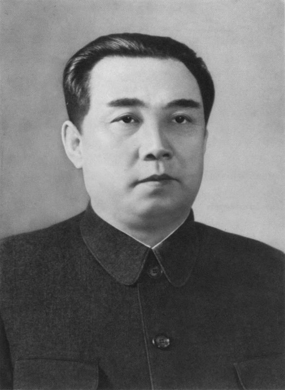

SumberKim Il-sung (1912–1994) adalah pendiri dan pemimpin pertama Republik Rakyat Demokratik Korea (Korea Utara). Berikut beberapa informasi penting tentang Kim Il-sung:
Lahir di tahun 1912 di sebuah desa di Korea yang saat itu masih berada di bawah penjajahan Jepang. Aktivitas revolusioner: Pada usia muda, Kim Il-sung terlibat dalam gerakan perlawanan terhadap penjajahan Jepang. Dia bergabung dengan Tentara Pembebasan Rakyat Korea dan menerima pelatihan di Uni Soviet.
Setelah Perang Dunia II dan Jepang menyerah pada 1945, Korea dibagi menjadi dua bagian: Korea Utara di bawah pengaruh Uni Soviet dan Korea Selatan di bawah pengaruh Amerika Serikat. Pada tahun 1948, Kim Il-sung mendirikan Republik Rakyat Demokratik Korea (Korea Utara) dan menjadi pemimpin pertama.
Kim Il-sung memimpin Korea Utara dalam Perang Korea (1950–1953) dengan tujuan untuk menyatukan seluruh Korea di bawah pemerintahannya. Perang ini berakhir dengan gencatan senjata pada 1953, tetapi kedua negara tetap terpisah dengan garis demarkasi yang dikenal sebagai Zona Demiliterisasi Korea (DMZ).
Kim Il-sung memimpin Korea Utara dengan sistem totaliter yang sangat terpusat pada kekuasaan dirinya. Juche adalah ideologi yang dikembangkan oleh Kim Il-sung, yang menekankan kemerdekaan dan ketergantungan pada diri sendiri dalam ekonomi, politik, dan pertahanan. Dia dikenal dengan kultus kepribadiannya, di mana dia dianggap sebagai pemimpin yang hampir tidak terbantahkan dan diberi gelar seperti "Bapak Bangsa" atau "Pemimpin Abadi".
Di bawah kepemimpinannya, Korea Utara mengembangkan kemampuan nuklir dan memperkuat militer, menjadikannya salah satu negara dengan militer terbesar di dunia. Namun, ekonomi Korea Utara sangat bergantung pada bantuan luar negeri, terutama dari Uni Soviet dan Tiongkok, tetapi kondisi ekonomi tetap tertinggal dibandingkan dengan Korea Selatan.
Kim Il-sung meninggal pada 1994 dan digantikan oleh putranya, Kim Jong-il. Setelah kematiannya, kultus kepribadian Kim Il-sung tetap dipertahankan, dan dia dipandang sebagai tokoh yang sangat dihormati oleh warga Korea Utara. Patung-patung dan gambar-gambar besar Kim Il-sung masih terlihat di seluruh negara. Kim Il-sung dianggap oleh banyak orang sebagai tokoh yang menetapkan dasar pemerintahan otoriter di Korea Utara yang diteruskan oleh generasi penerusnya, yaitu Kim Jong-il dan Kim Jong-un.